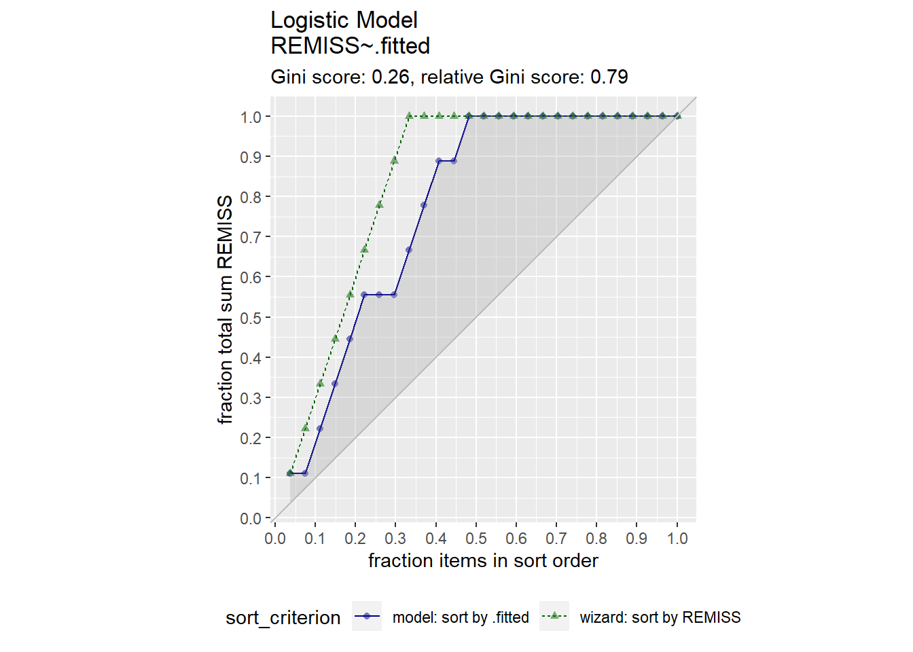

7.1 Logistic Regression
Logistic regression estimates the probability of a particular level of a categorical response variable given a set of predictors. The response levels can be binary, nominal (multiple categories), or ordinal (multiple levels).
The binary logistic regression model is
\[y_i = logit(\pi_i) = \log\left(\frac{\pi_i}{1-\pi_i}\right) = X_i\beta\]
where \(\pi_i\) is the “success probability” that observation \(i\) is in a specified category of the binary y variable. You can solve for \(\pi\) to get
\[\pi = \frac{\exp(X \beta)}{1 + \exp(X \beta)}.\]
The model predicts the log odds of the response variable. The maximum likelihood estimator maximizes the the likelihood function
\[L(\beta; y, X) = \prod_{i=1}^n \pi_i^{y_i}(1 - \pi_i)^{(1-y_i)} = \prod_{i=1}^n\frac{\exp(y_i X_i \beta)}{1 + \exp(X_i \beta)}.\]
There is no closed-form solution, so GLM estimates coefficients with interatively reweighted least squares.
Example
Dataset leuk contains response variable REMISS indicating whether leukemia remission occurred (1|0) and several explanatory variables.
data_dir <- "C:/Users/mpfol/OneDrive/Documents/Data Science/Data/"
leuk <- read_tsv(paste(data_dir, "leukemia_remission.txt", sep = "/"))## Parsed with column specification:
## cols(
## REMISS = col_double(),
## CELL = col_double(),
## SMEAR = col_double(),
## INFIL = col_double(),
## LI = col_double(),
## BLAST = col_double(),
## TEMP = col_double()
## )## Classes 'spec_tbl_df', 'tbl_df', 'tbl' and 'data.frame': 27 obs. of 7 variables:
## $ REMISS: num 1 1 0 0 1 0 1 0 0 0 ...
## $ CELL : num 0.8 0.9 0.8 1 0.9 1 0.95 0.95 1 0.95 ...
## $ SMEAR : num 0.83 0.36 0.88 0.87 0.75 0.65 0.97 0.87 0.45 0.36 ...
## $ INFIL : num 0.66 0.32 0.7 0.87 0.68 0.65 0.92 0.83 0.45 0.34 ...
## $ LI : num 1.9 1.4 0.8 0.7 1.3 0.6 1 1.9 0.8 0.5 ...
## $ BLAST : num 1.1 0.74 0.18 1.05 0.52 0.52 1.23 1.35 0.32 0 ...
## $ TEMP : num 1 0.99 0.98 0.99 0.98 0.98 0.99 1.02 1 1.04 ...
## - attr(*, "spec")=
## .. cols(
## .. REMISS = col_double(),
## .. CELL = col_double(),
## .. SMEAR = col_double(),
## .. INFIL = col_double(),
## .. LI = col_double(),
## .. BLAST = col_double(),
## .. TEMP = col_double()
## .. )Fit a logistic regression in R using glm(formula, data, family = binomial) where family = binomial specifies a binomial error distribution.
##
## Call: glm(formula = REMISS ~ ., family = binomial, data = leuk)
##
## Coefficients:
## (Intercept) CELL SMEAR INFIL LI BLAST
## 64.2581 30.8301 24.6863 -24.9745 4.3605 -0.0115
## TEMP
## -100.1734
##
## Degrees of Freedom: 26 Total (i.e. Null); 20 Residual
## Null Deviance: 34
## Residual Deviance: 22 AIC: 36##
## Call:
## glm(formula = REMISS ~ ., family = binomial, data = leuk)
##
## Deviance Residuals:
## Min 1Q Median 3Q Max
## -1.9540 -0.6626 -0.0252 0.7818 1.5747
##
## Coefficients:
## Estimate Std. Error z value Pr(>|z|)
## (Intercept) 64.2581 74.9648 0.86 0.39
## CELL 30.8301 52.1352 0.59 0.55
## SMEAR 24.6863 61.5260 0.40 0.69
## INFIL -24.9745 65.2809 -0.38 0.70
## LI 4.3605 2.6580 1.64 0.10
## BLAST -0.0115 2.2663 -0.01 1.00
## TEMP -100.1734 77.7529 -1.29 0.20
##
## (Dispersion parameter for binomial family taken to be 1)
##
## Null deviance: 34.372 on 26 degrees of freedom
## Residual deviance: 21.594 on 20 degrees of freedom
## AIC: 35.59
##
## Number of Fisher Scoring iterations: 8The predicted value \(\hat{y}\) is the estimated log odds of the response variable,
\[\hat{y} = X \hat{\beta} = \ln (\frac{\pi}{1 - \pi}).\]
Suppose each predictor equals its mean value, then the log odds of REMISS is \(-2.684\).
pred <- predict(m1, newdata = data.frame(CELL = mean(leuk$CELL),
SMEAR = mean(leuk$SMEAR),
INFIL = mean(leuk$INFIL),
LI = mean(leuk$LI),
BLAST = mean(leuk$BLAST),
TEMP = mean(leuk$TEMP)))Log odds are not easy to interpet, but it is convenient for updating prior probabilities in Bayesian analyses. See this article in Statistics How To. Exponentiate the log odds to get the more intuitive odds.
\[\exp (\hat{y}) = \exp (X \hat{\beta}) = \frac{\pi}{1 - \pi}.\]
The odds of having achieved remission when each predictor equals its mean value is \(\exp(\hat{y}) = 0.068\).
## 1
## 0.068You might express that more commonly as 1 / 0.068 = 15:1. So a person with average values of the predictors has an odds of “15 to 1” of having achieved remission.
## 1
## 15Or, solve for \(\pi\) to get the probability.
\[\pi = \frac{\exp (X \beta)}{1 + \exp (X \beta)}\]
The probability of having achieved remission when each predictor equals its mean value is \(\pi = 0.064\). The predict() function for a logistic model returns log-odds, but can also return \(\pi\) by specifying parameter type = "response".
## 1
## 0.064prob <- predict(m1, newdata = data.frame(CELL = mean(leuk$CELL),
SMEAR = mean(leuk$SMEAR),
INFIL = mean(leuk$INFIL),
LI = mean(leuk$LI),
BLAST = mean(leuk$BLAST),
TEMP = mean(leuk$TEMP)),
type = "response")It is common to express the results in terms of the odds ratio. The odds ratio is the ratio of the odds before and after an increment to the predictors. It tells you how much the odds would be multiplied after a \(X_1 - X_0\) unit increase in \(X\).
\[\theta = \frac{\pi / (1 - \pi) |_{X = X_1}}{\pi / (1 - \pi) |_{X = X_0}} = \frac{\exp (X_1 \hat{\beta})}{\exp (X_0 \hat{\beta})} = \exp ((X_1-X_0) \hat{\beta}) = \exp (\delta \hat{\beta})\]
For example, increasing LI by .01 increases the odds of remission by a factor of \(\exp(0.1 \cdot 4.36) = 1.547\) (from 15:1 to 23:1).
## (Intercept) CELL SMEAR INFIL LI BLAST
## 617.579877 21.823908 11.806280 0.082295 1.546579 0.998848
## TEMP
## 0.000045You can calculate an odds ratio using oddsratio::or_glm().
library(oddsratio)
or_glm(data = leuk,
model = m1,
incr = list(CELL = 0.01,
SMEAR = 0.01,
INFIL = 5,
LI = 0.1,
BLAST = 1.0,
TEMP = 0.3))## # A tibble: 6 x 5
## predictor oddsratio `CI_low (2.5)` `CI_high (97.5)` increment
## <chr> <dbl> <dbl> <dbl> <chr>
## 1 CELL 1.36 0.747 4.64e 0 0.01
## 2 SMEAR 1.28 0.537 5.15e 0 0.01
## 3 INFIL 0 0 1.09e152 5
## 4 LI 1.55 1.04 2.99e 0 0.1
## 5 BLAST 0.989 0.009 9.10e 1 1
## 6 TEMP 0 0 1.10e 3 0.3The predicted values can also be expressed as the probabilities \(\pi\). This produces the familiar signmoidal shape of the binary relationship.
augment(m1, type.predict = "response") %>%
ggplot(aes(x = LI, y = REMISS)) +
geom_point() +
geom_line(aes(y = .fitted), color = "red") +
labs(x = "LI",
y = "Probability of Event",
title = "Binary Fitted Line Plot")
Whereas in linear regression the the coefficient p-values use the t test (t statistic), logistic regression coefficient p-values use the Wald test **Z*-statistic).
\[Z = \frac{\hat{\beta_i}}{SE(\hat{\beta}_i)}\]
## (Intercept) CELL SMEAR INFIL LI BLAST
## 0.857 0.591 0.401 -0.383 1.641 -0.005
## TEMP
## -1.288## (Intercept) CELL SMEAR INFIL LI BLAST
## 0.39 0.55 0.69 0.70 0.10 1.00
## TEMP
## 0.20Evaluate a logistic model fit with an analysis of deviance. Deviance is defined as -2 times the log-likelihood \(-2l(\beta)\). The null deviance is the deviance of the null model and is analagous to SST in ANOVA. The residual deviance is analagous to SSE in ANOVA.
## 'log Lik.' 22 (df=7)## Analysis of Deviance Table
##
## Model: binomial, link: logit
##
## Response: REMISS
##
## Terms added sequentially (first to last)
##
##
## Df Deviance Resid. Df Resid. Dev
## NULL 26 34.4
## CELL 1 2.58 25 31.8
## SMEAR 1 0.52 24 31.3
## INFIL 1 0.29 23 31.0
## LI 1 6.78 22 24.2
## BLAST 1 0.33 21 23.9
## TEMP 1 2.28 20 21.6##
## Call: glm(formula = REMISS ~ ., family = binomial, data = leuk)
##
## Coefficients:
## (Intercept) CELL SMEAR INFIL LI BLAST
## 64.2581 30.8301 24.6863 -24.9745 4.3605 -0.0115
## TEMP
## -100.1734
##
## Degrees of Freedom: 26 Total (i.e. Null); 20 Residual
## Null Deviance: 34
## Residual Deviance: 22 AIC: 36##
## Call:
## glm(formula = REMISS ~ ., family = binomial, data = leuk)
##
## Deviance Residuals:
## Min 1Q Median 3Q Max
## -1.9540 -0.6626 -0.0252 0.7818 1.5747
##
## Coefficients:
## Estimate Std. Error z value Pr(>|z|)
## (Intercept) 64.2581 74.9648 0.86 0.39
## CELL 30.8301 52.1352 0.59 0.55
## SMEAR 24.6863 61.5260 0.40 0.69
## INFIL -24.9745 65.2809 -0.38 0.70
## LI 4.3605 2.6580 1.64 0.10
## BLAST -0.0115 2.2663 -0.01 1.00
## TEMP -100.1734 77.7529 -1.29 0.20
##
## (Dispersion parameter for binomial family taken to be 1)
##
## Null deviance: 34.372 on 26 degrees of freedom
## Residual deviance: 21.594 on 20 degrees of freedom
## AIC: 35.59
##
## Number of Fisher Scoring iterations: 8The deviance of the null model (no regressors) is 34.372. The deviance of the full model is 26.073.
## # A tibble: 1 x 7
## null.deviance df.null logLik AIC BIC deviance df.residual
## <dbl> <int> <dbl> <dbl> <dbl> <dbl> <int>
## 1 34.4 26 -10.8 35.6 44.7 21.6 20Use the GainCurvePlot() function to plot the gain curve (background on gain curve at Data Science Central from the model predictions. The x-axis is the fraction of items seen when sorted by the predicted value, and the y-axis is the cumulative summed true outcome. The “wizard” curve is the gain curve when the data is sorted by the true outcome. If the model’s gain curve is close to the wizard gain curve, then the model sorted the response variable well. The grey area is the gain over a random sorting.
augment(m1) %>% data.frame() %>%
GainCurvePlot(xvar = ".fitted", truthVar = "REMISS", title = "Logistic Model")
REMISS equals 1 in 9 of the 27 responses.
- The wizard curve shows that after sorting the responses it encounters all 9 1s (100%) after looking at 9 of the 27 response (33%).
- The bottom of the grey diagonal shows that after making random predictions and sorting the predictions, it encounters only 3 1s (33%) after looking at 9 of the 27 responses (33%). It has to look at all 27 responses (100%) to encounter all 9 1s (100%).
- The gain curve encounters 5 1s (55%) after looking at 9 of the 27 responses (33%). It has to look at 14 responses to encounter all 9 1s (100%).
Another way to evaluate the predictive model is the ROC curve. It evaluates all possible thresholds for splitting predicted probabilities into predicted classes. This is often a much more useful metric than simply ranking models by their accuracy at a set threshold, as different models might require different calibration steps (looking at a confusion matrix at each step) to find the optimal classification threshold for that model.
## Warning: package 'caTools' was built under R version 3.6.2## [,1]
## 0 vs. 1 0.9